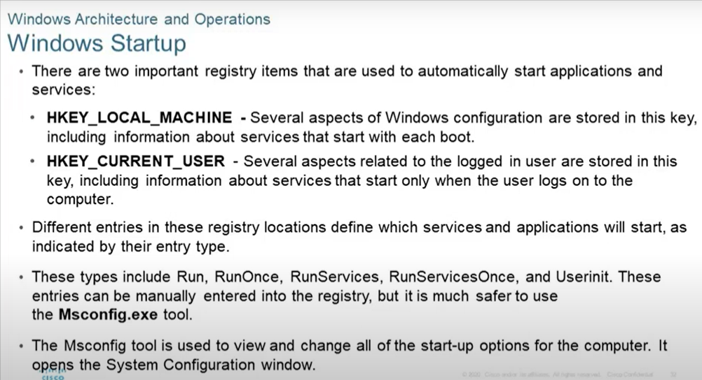

Windows Startup

Windows Register yani Kayıt Defteri yöneticisi içersinide önemli olan 2 adet kolon vardır.
Register : Windowsun tüm parametrelerin tüm sürecinin ne oalcağını tarif etmek kullandığı bir database.
- HKEY_LOCAL_MACHıNE: Bilgisayarın donanımıyla ilgili configürasyon alanlarının olduğu alandır.
- HKEY_CURRENT_USER: Bilgisayarın sadece bağlandığı o an ki kullanıcısının ayarlarını gösterir.